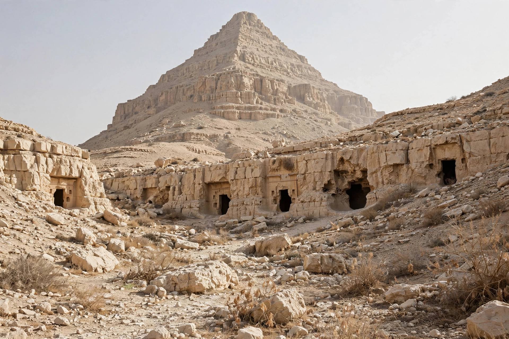

The Valley of the Kings (Arabic: وادي الملوك, Wādī al-Mulūk) is a valley in Upper Egypt on the west bank of the Nile opposite Thebes (modern Luxor), where rock-cut tombs were built for the pharaohs and powerful nobles of the New Kingdom (18th to 20th Dynasties) over a period of nearly 500 years, from about 1539 to 1075 BC. The valley contains 65 known tombs and chambers, including the famous tomb of Tutankhamun (KV62), discovered nearly intact in 1922. Together with the Theban Necropolis, it has been a UNESCO World Heritage Site since 1979.

| Valley of the Kings | |
|---|---|
| Location | Luxor Governorate, Egypt |
| Period | New Kingdom, c. 1539–1075 BC |
| Known tombs | 65 (KV1–KV65) |
| Most famous | KV62 — Tutankhamun; KV17 — Seti I |
| UNESCO | World Heritage Site (1979), part of Ancient Thebes |
The valley lies in limestone hills beneath al-Qurn, a natural pyramid-shaped peak sacred to the goddess Hathor, which may have inspired the choice of site along with the valley's isolation. Its two branches — the East Valley, containing most royal tombs, and the West Valley — were chosen to replace vulnerable pyramid burials, though nearly all tombs were robbed in antiquity.
New Kingdom kings buried here include Thutmose I, Hatshepsut, Thutmose III, Amenhotep II, Tutankhamun, Seti I and six pharaohs named Ramesses. Tombs (designated KV, for "Kings' Valley") typically descend through corridors decorated with texts from funerary books — the Amduat, Book of Gates and Litany of Ra — into a burial chamber with a stone sarcophagus. The longest and deepest is KV17, the tomb of Seti I, celebrated for the quality of its painted reliefs. Workers who built the tombs lived in the village of Deir el-Medina nearby.
The valley was visited in antiquity — Greek and Roman tourists left graffiti — and systematically explored from the late 18th century. Giovanni Belzoni discovered several tombs including Seti I's in 1817. The discovery that eclipsed all others came in November 1922, when Howard Carter and Lord Carnarvon found the steps to Tutankhamun's tomb, the only royal tomb of the valley found with its treasures substantially intact; its excavation, and the "curse of the pharaohs" legend, made world news. KV5, a vast multi-chambered tomb of the sons of Ramesses II, was cleared in the 1990s by Kent Weeks's Theban Mapping Project, and KV63 and KV64 were found in the 2000s, the first new tombs in decades.
A rotating selection of tombs is open to visitors; humidity, flooding and mass tourism threaten the paintings, and replicas — notably of Tutankhamun's burial chamber — have been created to relieve pressure on the originals.
Tutankhamun · Howard Carter · Luxor · Valley of the Queens · New Kingdom of Egypt
From Wikipedia, the free encyclopedia.